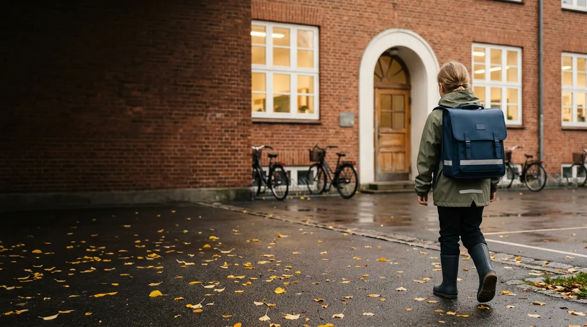
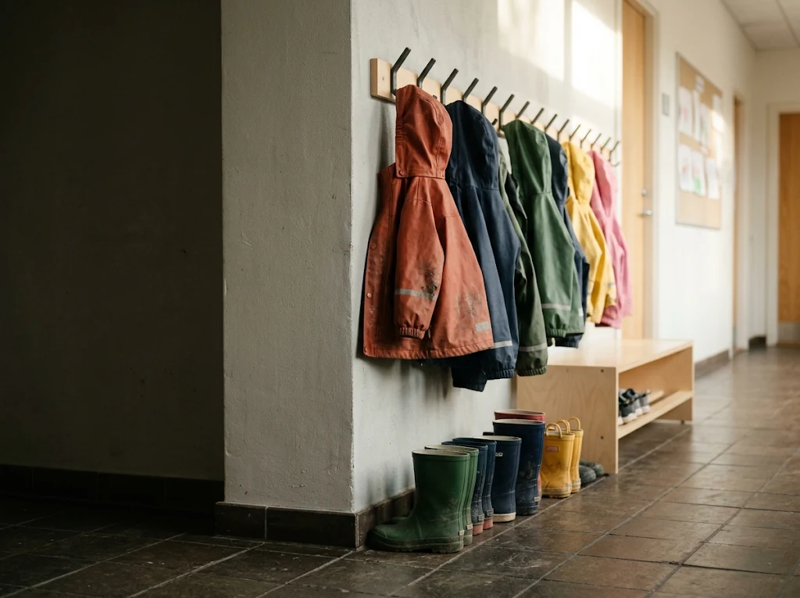
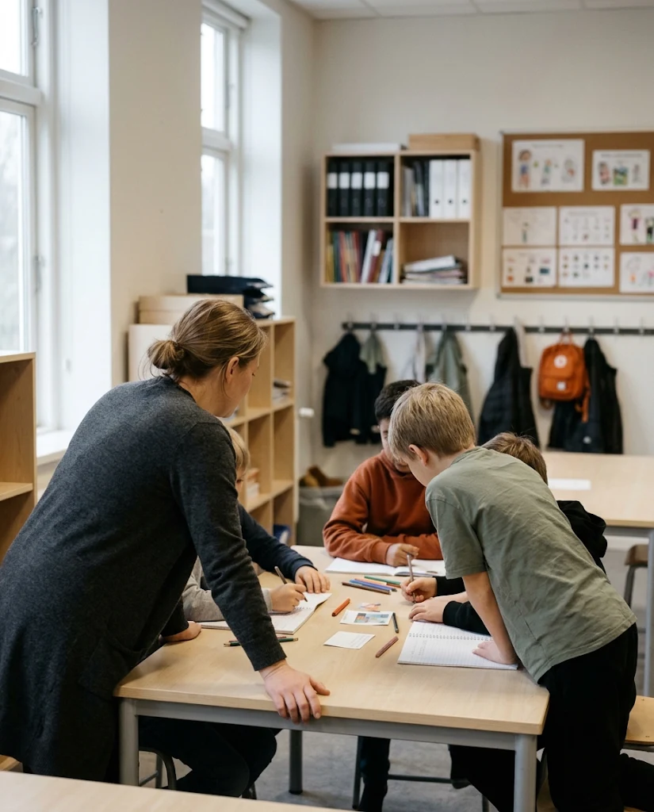
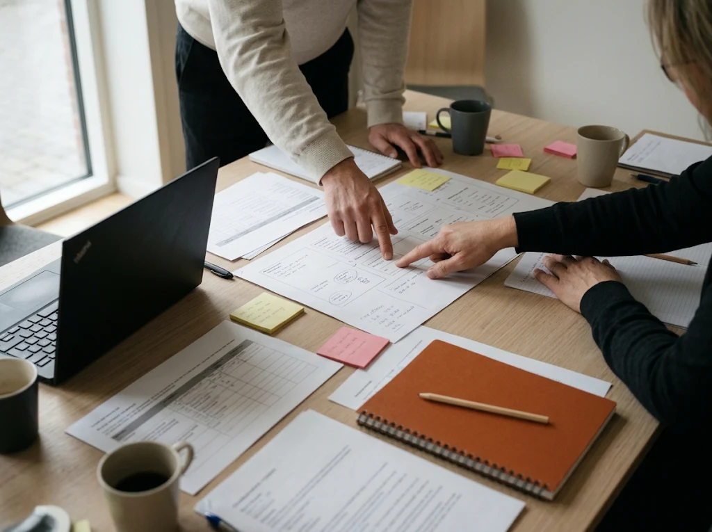
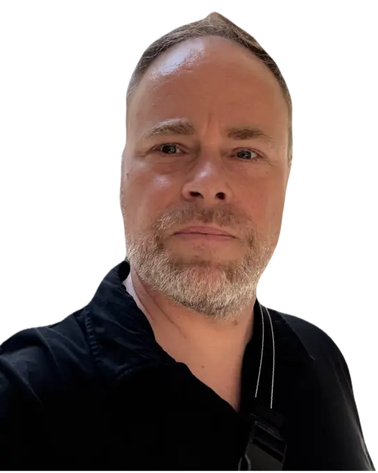
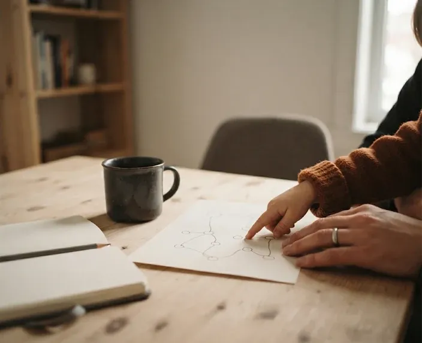

Når skolen sidder fast, finder vi næste skridt.
Anne Kirk Poulsen og Christian Brendholdt hjælper forældre, skoler og kommuner fra udfordring til handling.
eller ring på 31 41 10 44
Hvem hjælper vi?
Vi arbejder med forældre, skoler og kommuner. Find den side, der passer til jer.

Forældre
Når jeres barn ikke trives fagligt, socialt eller følelsesmæssigt, og I har brug for hjælp til at finde vej i det kommunale system.
Læs om hjælp til forældre
Skoler
Når en skole kan mærke, at noget ikke fungerer, men har brug for hjælp til at forstå hvorfor.
Læs om ydelser til skoler
Kommuner
Når der er brug for at skabe bedre forbindelse mellem det, man beslutter centralt, og det der faktisk sker på skolerne.
Læs om ydelser til kommuner
Seks trin fra udfordring til handling
Vi starter ikke med løsningen. Vi starter med at forstå situationen.

Hvem er vi?
Mød osAnne Kirk Poulsen
Mere end 30 års erfaring fra skoleverdenen som lærer, vice- og skoleleder og chefkonsulent på kommunalt niveau.

Christian Brendholdt
Meritlærer og cand.mag. med erfaring fra skoleledelse. Siden 2023 ansvarlig for udvikling og drift af Nest-klasser.

Lad os tage en snak om, hvad I står med.
Ring eller skriv, så finder vi et tidspunkt.